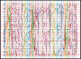

Note
Go to the end to download the full example code.
7.1. Create memory bank pin placement and connection¶
This example demonstrated how a memeroy bacnk protocol can be inserted in the pre place and routed module.
The idea here is to optimize the WL and BL pin placement on the tile as well as restructure the (WL and BL) connectivity with eatch latch. The input this script is the placment and information of each latch, which can be extracted from the following tcl script.
foreach_in_collection cell [get_cells *LAT* -hierarchical] {
echo "[get_attr -name full_name $cell] [get_attr -name origin $cell]"
} > _filename.txt
Algorithm:
Find total number of configuration elements in the block
BFind number of WL lines (horizontal lines)
wl_n = ceil(sqrt(B))Calculate number of BL lines (vertical lines)
bl_n = B/wl_nSort each cell with increasing order of
x_loc, assign bl[0] to first set ofwl_ncells and continue assignement till the endSort each cell with increasing order of
y_loc, assign wl[0] to first set ofbl_ncells and continue assignement till the end
Highlight BL connectivity:
{kind=link}
Output log:
INFO 76 - Total mem elements 756
INFO 77 - word lines 28
INFO 78 - bit lines 27
INFO 79 - Capacity 756
INFO 80 - Extra Conns 0
INFO 111 - x_cuts [0.28, 2.52, 5.74, 7.84, 10.08, 12.32, 15.12, 19.32, 21.84, 24.92, 27.86, 30.38, 32.06, 34.3, 36.68, 40.88, 46.34, 49.42, 54.32, 58.52, 62.02, 67.48, 69.86, 72.8, 75.18, 78.26, 80.92, 82]
INFO 112 - wl_lines [0.9, 2.7, 4.5, 6.3, 8.1, 9.9, 11.7, 14.4, 17.1, 19.8, 22.5, 24.3, 26.1, 28.8, 31.5, 33.3, 35.1, 36.9, 38.7, 40.5, 42.3, 45.0, 47.7, 50.4, 53.1, 54.9, 56.7, 57.3]
INFO 113 - bl_lines [1.4, 4.13, 6.79, 8.96, 11.2, 13.72, 17.22, 20.58, 23.38, 26.39, 29.12, 31.22, 33.18, 35.49, 38.78, 43.61, 47.88, 51.87, 56.42, 60.27, 64.75, 68.67, 71.33, 73.99, 76.72, 79.59, 81.46]
INFO 126 - V Cost 13.73, H Cost 13.54, Total Cost 27.27
Note
This is a linear solution to the problem. A further improvement can be obtained by using a simulated annealing method with the solution received in this example as an initial condition.
import logging
import math
import numpy as np
import pandas as pd
import seaborn as sns
import spydrnet as sdn
import svgwrite
logger = logging.getLogger("spydrnet_logs")
sdn.enable_file_logging(LOG_LEVEL="INFO", filename="memory_bank_protocol")
logger.handlers[1].setFormatter(
logging.Formatter("%(levelname)5s %(lineno)3s - %(message)s")
)
def main():
latch_locs = pd.read_csv(
"latch_placement_dump.txt", sep=" ", names=["cells", "x_loc", "y_loc"]
)
# latch_locs = pd.read_csv('small_latch_placement.txt', sep=" ",
# names=["cells", "x_loc", "y_loc"])
np.random.seed(40)
# latch_locs = latch_locs.sample(n=750)
total_mem_elements = latch_locs.shape[0]
wl_n = math.ceil(math.sqrt(total_mem_elements))
bl_n = math.ceil(total_mem_elements / wl_n)
_, x_max = int(min(latch_locs["x_loc"])), int(max(latch_locs["x_loc"]))
_, y_max = int(min(latch_locs["y_loc"])), int(max(latch_locs["y_loc"]))
logger.info("Total mem elements %s", total_mem_elements)
logger.info("word lines %s", wl_n)
logger.info("bit lines %s", bl_n)
logger.info("Capacity %s", wl_n * bl_n)
logger.info("Extra Conns %s", (wl_n * bl_n) - total_mem_elements)
latch_locs = latch_locs.sort_values(by=["x_loc", "y_loc"])
x_cuts = latch_locs[::wl_n]["x_loc"].values.tolist() + [x_max]
bl_lines = [round(sum(pts) * 0.5, 2) for pts in zip(x_cuts[:-1], x_cuts[1:])]
sequence = [j for j in range(bl_n) for i in range(wl_n)]
latch_locs["x_bins"] = sequence[: latch_locs.shape[0]]
latch_locs = latch_locs.sort_values(by=["x_bins", "y_loc"])
sequence_bl = []
sequence_wl = []
for i in range(bl_n):
sequence_bl += [f"b{i}"] * (wl_n)
sequence_wl += [f"w{j}" for j in range(wl_n)]
latch_locs["bl"] = sequence_bl[: latch_locs.shape[0]]
latch_locs["wl"] = sequence_wl[: latch_locs.shape[0]]
latch_locs = latch_locs.sort_values(by=["y_loc", "x_loc"])
y_cuts = latch_locs[::bl_n]["y_loc"].values.tolist()
y_cuts += [y_max]
wl_lines = [round(sum(pts) * 0.5, 2) for pts in zip(y_cuts[:-1], y_cuts[1:])]
# This is an alternate option to place WL pins based on the
# the average y location of each Wx assigned cells
# wl_lines = []
# for each in sorted(latch_locs["wl"].unique()):
# rows = latch_locs[latch_locs["wl"] == each]["y_loc"].values
# print(each, rows)
# wl_lines.append(sum(rows)/len(rows))
logger.info("x_cuts %s", x_cuts)
logger.info("wl_lines %s", wl_lines)
logger.info("bl_lines %s", bl_lines)
render_placement(
latch_locs,
wl_lines,
bl_lines,
x_cuts,
filename="_memeory_bank_conn_bl_line.svg",
highlights="b",
)
write_report(latch_locs)
validate_connection(latch_locs)
cost = find_connection_cost(latch_locs, wl_lines, bl_lines)
logger.info("V Cost %.2f, H Cost %.2f, Total Cost %.2f", *cost, sum(cost))
def write_report(latch_locs):
with open("_eco_changes.tcl", "w", encoding="UTF-8") as fp:
wl_n = latch_locs["wl"].unique().size
bl_n = latch_locs["bl"].unique().size
fp.write("remove_ports [get_ports -quiet wl*]\n")
fp.write("remove_ports [get_ports -quiet bl*]\n")
fp.write("remove_nets [get_nets -quiet wl*]\n")
fp.write("remove_nets [get_nets -quiet bl*]\n")
fp.write("for { set a 0} {$a < %d} {incr a} {\n" % wl_n)
fp.write(" create_port wl[$a] -direction in;\n")
fp.write(" create_net wl[$a];\n")
fp.write(" connect_net -net wl[$a] wl[$a];\n")
fp.write("}\n")
fp.write("for { set a 0} {$a < %d} {incr a} {\n" % bl_n)
fp.write(" create_port bl[$a] -direction in;\n")
fp.write(" create_net bl[$a];\n")
fp.write(" connect_net -net bl[$a] bl[$a];\n")
fp.write("}\n")
fp.write("foreach_in_collection pin [get_pins *LAT*/D -hier] {\n")
fp.write(" disconnect_net -net [get_nets -quiet -of_objects $pin] $pin\n")
fp.write("}\n")
fp.write("foreach_in_collection pin [get_pins *LAT*/G -hier] {\n")
fp.write(" disconnect_net -net [get_nets -quiet -of_objects $pin] $pin\n")
fp.write("}\n")
for _, each in latch_locs.iterrows():
cell = each["cells"]
fp.write("connect_net -net bl[%s] %s/D\n" % (each["bl"][1:], cell))
fp.write("connect_net -net wl[%s] %s/G\n" % (each["wl"][1:], cell))
def validate_connection(dataframe):
duplicated = dataframe[dataframe.duplicated(subset=["wl", "bl"], keep=False)]
assert duplicated.size == 0, "Found %d duplicate connections" % duplicated.size
def find_connection_cost(latch_locs, wl_lines, bl_lines):
total_v_wiring = 0
total_h_wiring = 0
for _, each in latch_locs.iterrows():
x_loc = float(each["x_loc"])
y_loc = float(each["y_loc"])
wl_indx = int(each["wl"][1:])
bl_indx = int(each["bl"][1:])
total_h_wiring = abs(x_loc - wl_lines[wl_indx])
total_v_wiring = abs(y_loc - bl_lines[bl_indx])
return round(total_v_wiring, 2), round(total_h_wiring, 2)
def render_placement(
latch_locs, wl_lines, bl_lines, regions=None, filename="_sample.svg", highlights="b"
):
dwg = svgwrite.Drawing()
_, xmax = min(latch_locs["x_loc"]), max(latch_locs["x_loc"]) + 8
_, ymax = min(latch_locs["y_loc"]), max(latch_locs["y_loc"]) + 8
viewbox = (-4, -4, xmax, ymax)
dwg.viewbox(*viewbox)
dwg_main = dwg.add(dwg.g(id="main_frame"))
dwg.defs.add(
dwg.style(
r"""
.boundary{fill:#FAFAFA; stroke-width:1px; stroke:black}
.wl_lines{fill:red; stroke-width:0.1px; opacity:0.6;}
.bl_lines{fill:green; stroke-width:0.1px; opacity:0.6;}
.connections{fill:green; stroke-width:0.1px; stroke:black;}
"""
)
)
dwg_main.add(dwg.rect(size=(xmax, ymax), insert=(-4, -4), class_="boundary"))
palette = sns.color_palette(None, max(len(wl_lines), len(bl_lines))).as_hex()
for _, each in latch_locs.iterrows():
color = {True: "black"}
for indx, each_color in enumerate(palette):
color[each[f"{highlights}l"] == f"{highlights}{indx}"] = each_color
color = color[True]
dwg_main.add(
dwg.circle(
r=0.5,
class_="marker",
fill=color,
stroke="none",
center=(each["x_loc"], each["y_loc"]),
)
)
# Add connection to the line
wl_indx = int(each["wl"][1:])
bl_indx = int(each["bl"][1:])
dwg_main.add(
dwg.line(
start=(each["x_loc"], each["y_loc"]),
end=(
bl_lines[bl_indx],
wl_lines[wl_indx],
),
class_="connections",
)
)
# Add word and bit lines regions
if regions and (highlights == "b"):
for indx, pts in enumerate(zip(regions[:-1], regions[1:])):
min_pt, max_pt = pts
dwg_main.add(
dwg.rect(
size=((max_pt - min_pt), ymax),
class_="bl_region",
fill=palette[indx],
opacity=0.1,
insert=(min_pt, -4),
)
)
if regions and (highlights == "w"):
for indx, pts in enumerate(zip(regions[:-1], regions[1:])):
min_pt, max_pt = pts
dwg_main.add(
dwg.rect(
size=(xmax, (max_pt - min_pt)),
class_="wl_region",
fill=palette[indx],
opacity=0.1,
insert=(-4, min_pt),
)
)
# Add word and bit lines
for indx, each_wl in enumerate(wl_lines):
dwg_main.add(
dwg.rect(
size=(xmax, 0.05),
class_="wl_lines",
stroke=palette[indx] if highlights == "w" else "red",
insert=(-4, each_wl),
)
)
for indx, each_wl in enumerate(bl_lines):
dwg_main.add(
dwg.rect(
size=(0.05, ymax),
class_="bl_lines",
stroke=palette[indx] if highlights == "b" else "red",
insert=(each_wl, -4),
)
)
dwg.saveas(filename, pretty=True, indent=4)
return dwg
if __name__ == "__main__":
main()
Output TCL
remove_ports [get_ports -quiet wl*]
remove_ports [get_ports -quiet bl*]
remove_nets [get_nets -quiet wl*]
remove_nets [get_nets -quiet bl*]
for { set a 0} {$a < 28} {incr a} {
create_port wl[$a] -direction in;
create_net wl[$a];
connect_net -net wl[$a] wl[$a];
}
for { set a 0} {$a < 27} {incr a} {
create_port bl[$a] -direction in;
create_net bl[$a];
connect_net -net bl[$a] bl[$a];
}
foreach_in_collection pin [get_pins *LAT*/D -hier] {